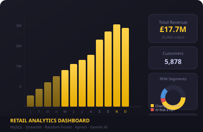

ShopSense: Market Intelligence Analysis
Python
MySQL
Pandas
Plotly
Streamlit
Scikit-learn
MLxtend
Random Forest
Apriori
Gemini 2.0 Flash
OpenRouter API
📊 View Live Dashboard
Overview
Built an end-to-end retail analytics platform processing over 1 million raw transactional records into a seven-tab interactive Streamlit dashboard. The pipeline cleans and stores 805,549 transactions across 5,878 customers and 36,969 orders into a MySQL database, then surfaces executive KPIs, customer segmentation, market basket intelligence, and ML-powered sales forecasting - all wrapped with a conversational AI Business Analyst powered by Google Gemini 2.0 Flash.
Dashboard Modules
ETL & Data Pipeline
Ingested and cleaned 1,067,371 raw rows
from a UK-based online retailer dataset, removing cancellations, invalid
stock codes, and null customers to produce a clean
805,549-row dataset. Derived revenue,
quantity, and order metrics and loaded everything into a normalized
MySQL schema for downstream querying.
Executive KPI Dashboard
Surfaces key business metrics across the full dataset: total revenue of
£17.7M, 5,878 unique customers, and 36,969
orders. Built interactive Plotly visualizations
for monthly revenue trends, top products by revenue and volume, and
country-level performance - driven directly from
MySQL queries at render time.
RFM Customer Segmentation
Scored all customers on Recency, Frequency,
and Monetary dimensions to produce 8 behavioral segments. Identified
that Champions (22% of customers) drive
68% of total revenue (£12.1M), while
At Risk customers represent over £1M in
revenue at risk of churn - enabling targeted retention campaigns
for each segment.
Market Basket Analysis
Applied the Apriori algorithm via MLxtend
to mine 60 association rules from transaction
data. Surfaced cross-sell opportunities with lift scores up to
29.9 - the strongest rule linking Blue and
Pink Spotty Party Candles. Rules are filterable by support, confidence, and
lift for product bundling and placement decisions.
ML Sales Forecasting
Trained a Random Forest Regressor on
time-enriched features (lag values, rolling means, day-of-week, month) to
predict weekly revenue. Achieved an R² of 0.707
on the holdout set, with a forecast for H1 2012 projecting
£3.6M in revenue. Feature importance
analysis confirmed lag-1 revenue as the dominant predictor.
AI Business Analyst
Integrated Google Gemini 2.0 Flash via
OpenRouter API to create a conversational analyst layer. The AI is preloaded
with full dataset context - RFM segments, basket rules, forecast figures,
and behavioral patterns - and responds to natural language queries with
structured, data-grounded business recommendations.
Key Findings
- Champions segment (22% of customers) generate 68% of total revenue (£12.1M out of £17.7M) - confirming extreme revenue concentration and making retention of this segment the single highest-leverage business priority.
- At Risk customers represent over £1M in revenue at risk of churn, with clear signals (declining recency and frequency) that allow targeted win-back campaigns before revenue is lost.
- Saturday orders drop to near-zero (~30 orders vs ~7,773 on Thursdays), confirming the customer base is predominantly B2B - with ordering patterns tightly coupled to business working hours.
- Netherlands customers average £2,430 per order compared to £439 for UK customers - identifying high-value international segments worth prioritizing for volume-based growth.
- Market basket lift of 29.9 between Blue and Pink Spotty Party Candles represents the strongest cross-sell opportunity identified, with 60 total actionable association rules available for product bundling and placement strategy.
- Random Forest R² = 0.707 on the holdout test set, with lag-1 weekly revenue as the most predictive feature - enabling reliable short-horizon revenue forecasting for inventory and procurement planning.